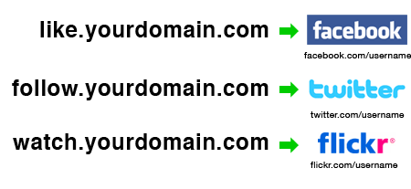

July 26, 2010

As Māori Language Week begins in New Zealand, it is now possible to register .NZ domain names with Macrons. The technology behind these new addresses are so-called Internationalized Domain Names (IDNs) which translate the special characters into a computer readable format.
Read more →
July 26, 2010
As Māori Language Week begins it is now possible to register .NZ domain names with Macrons. The technology behind these new addresses are so-called Internationalised Domain Names (IDNs) which translate the special characters into a computer readable format.
Read more →
July 24, 2010
Today we want to share with you a small branding advice that can be easily applied to your domain names and takes you only 2-3 minutes to set up. Subdomains such as blog.domainname.com or wiki.domainname.com are often used to map domain names to specific services but it’s also possible to simply forward them to another web address.
This is how the URL forwardings to your social network profiles could look like:

For example, you can like iwantmyname on Facebook (please do!) at like.iwantmyname.com or follow us on Twitter via follow.iwantmyname.com. So should your preferred social network change back to MySpace or Twitter be renamed to Twoogle you don’t have to adjust all your links except the new target web address for the subdomains. This makes your link branding completely third-party independent since you have full control over your own domain name.
Read more →
July 13, 2010

With the Beervana Festival looming on the horizon we thought it timely to run another beer giveaway promotion through our Twitter channel. Simply re-tweet the link to the iwantmyname blog and you’ll be in the draw for another pack of delightful Mata Beer. At the end of Wednesday we will pull a winner out of the hat and then arrange to drop the beer off to you.
Read more →
June 15, 2010
Internationalized Domain Names under .TEL
Read more →
June 9, 2010
We’ve been having some fun today playing with the search settings at iwantmyname.
Read more →
June 2, 2010
There’s no question that iwantmyname makes it easier and faster to register and manage domain names in New Zealand. Now we are making it easy to win some delicious New Zealand brewed boutique product from Mata Beer.
Read more →
May 19, 2010
At iwantmyname we want to make it a lot easier to hook up your favourite web apps to your chosen domain. Our web app directory already contains more than 30 services including the following categories: email, blogs, website builder, forums, ecommerce, portfolios, social networks, url shortener and wikis. There is a handy overview page that lists all the available apps and services. In addition to the web apps we’ve also provided additional documentation and information within the user dashboard to assist with more specific custom domain mapping of your favourite service. Log in and check it out.
Read more →
May 5, 2010
iwantmyname is the world’s most innovative domain registrar platform and was developed by our parent company based right here in Wellington, New Zealand. With a new wave of web-based ventures emerging on the New Zealand tech scene and a paradigm shift underway in the way we access distributed computing services globally, it seems like a good time to introduce our domain registrar platform to our home audience.
We first launched iwantmyname into the U.S. market at the end of 2008 with the aim of satisfying a growing demand from customers for a cleaner, quicker way to register domains. As we anticipated, there was an enthusiastic uptake, especially from the web developer and designer community who immediately grasped the benefits of a much more user-friendly interface. Our offer of some free services not provided by many of the big domain registrars sealed the deal in the minds of many.
During 2009 we were hard at work listening to our users, refining the platform technology and looking into other markets. We were soon approached by a partner in the Netherlands who had an existing hosting business and was keen to set up a Dutch language version of the site on a license basis. A German version of iwantmyname followed shortly afterwards. With sites operating successfully in three of the largest global markets for domains, it was time to refocus our attention on the local market.
A lot of our Kiwi friends had begun to discover iwantmyname offshore and we had received an increasing number of requests for a New Zealand dollar denominated site. Like many Kiwis that venture offshore, it was time for iwantmyname to return home. The January Linux Conference proved to be the perfect opportunity to launch the New Zealand version of iwantmyname and to get some nice feedback from actual users who visited our trade stand at the event.
If you have already used the NZ site – thank-you for supporting a local business! If you only just heard about us, please try a free account and check out our current special offers. You can even be our Facebook friend – we love feedback! Remember we have New Zealand’s largest range of domain extensions by far and lightning fast customer support that the big guys can only dream about.
Read more →
May 4, 2010
CNN Live News interview with Tina Dam from ICANN on topic of new Internationalized Domain Name (IDN) suffixes. The new development results in domain extensions such as .CN (China) or .GR (Greece) being available for users, expressed in their native languages and scripts.
Read more →
Older posts